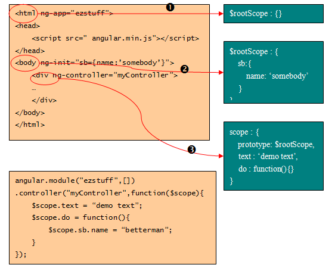

控制器对scope的影响
注意：ng-controller指令总是创建一个新的scope对象：
示例图： 
有图可得： 1. ng-app指令引发$rootScope对象的创建。
注意:开始时，它是一个空对象。
2.body元素对应的scope对象还是$rootScope。
注意：ng-init指令将sb对象挂在了$rootScope上。
3.div元素通过ng-controller指令创建了一个新的scope对象，这个对象的原型是$rootScope。
注意：等同于js的原型继承
4.因为原型继承的关系，在do函数中对sb的引用指向$rootScope.sb。